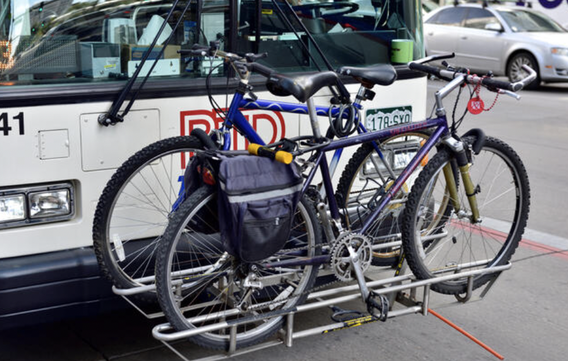

Target Interface
The bike rack on the bus is a common interface in public view. It is a device to which bicycles can be securely attached for parking purposes when passengers taking the bus. In this project, we are going to discuss the user experiences of this interface. Some observations about interactions between this interface and real users can be found here. The interview questions and interview summary regarding users' experiences with this interface can be found here.
Sketch & Description
This interface is used to provide a place for the bus passengers to place their bike safely and stably.
When a passenger wants to use the bike rack on the bus, he/she needs to first squeeze the release handle and pull it to low, just as shown in the left image above. One of the key interactive components here is the squeeze handle, passengers can only pull the bike rack down when they squeeze the handle. Then passenger can place the bike’s wheels in the front truck. Once the bike is mounted, he/she needs to raise the support arm up and over the front tire to make sure the arm is securely placed at the top close to the bike, just as shown in the right image above. Another key interactive component here is the raise support arm, which is used to secure the bike on the rack.
Observations
- Some of the passengers with bike can place and fasten the bike in less than 1 minute.
- Some of the passengers with bike foget to place the support arm on the bike's front wheel.
- A few of the passgengers with bike don't even know how to pull down the bike rack, they have to ask help from the bus driver.
Interview Questions
Q1: Have you ever taken the bus with your bike?
If the answer for the first question is yes, we follow the steps below:
Q2: Where did you place your bike when you took the bus?
Q3: What is your first reaction to the bike rack?
Q4: Have you ever met with any challenges when use the bike rack on the bus?
Q5: Do you feel this interface is easy to use or not?
If the answer for the first question is no, we follow the steps below:
Q2: What is your first reaction to this interface (showing the sketch to the interviewee)?
Q3: Will you use this interface if you need to take the bus with your bike in the future?
Interview Summary
For users who have taken the bus with a bike:
- They put the bike on the bike rack at most times.
- Sometimes, there is no room to place their own bikes on the bike rack.
- Most of them have no idea about how to use the bike rack at the first time, but after the first time, they find this interface is easy to use.
For users who have never taken the bus with a bike:
- For some of users, the imagination of being embarrassed for not knowing how to use the bike rack, or their bike get crushed under bus tires, doesn't allow them to use this interface.
- They think this interface is easy to use with the sketch and introduction and they will try to use it in the future.
Personas

The interface problem that Jason faces is that he doesn't know how to use this interface when using it for the first time. Jason represents a type of users who have no experience to use the bike rack on the bus and have no idea how to use it. Like this part of the users, Jason is nervous for not knowing how to use this interface and he is also embarrassed when get stuck.

The interface problem that Kevin faces is that the bike rack on the bus might not have room for his own bike. Kevin represnets a type of users who use this interface often but still face some potential problem from this interface. They can place their bikes on the rack in a very short time, but sometimes they will worry about the coming bus may have no room for their own bikes.